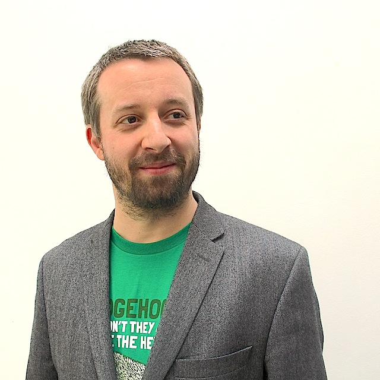

Undefined Discipline Robin Berjon
The faculty search posting requested someone «deeply versed in a minimum of two fields ». In my case, it is very precisely two: «Web technology» taken in a broad sense that reaches across numerous domains, and «Miscellaneous». I am particularly good at the latter.
The reason I must apply for this position is simple: while my work on the Web already covers much ground (from graphics to wire formats, from prototyping to negotiation, with technology as a social science), my interests are broader. As a result, many ideas that occur to me have to lay unbaked in notebooks, many areas of interest have to lay fallow and make do with what time I can marshall after work and family have been accounted for.
While I do make slow progress on these topics and have seen some limited successes, it is frustrating. I spoil to be a tinkering philosopher by day, not just after mild-mannered citizens have gone to bed.
I include a short selection of ideas and an overview of my reading pile in the hope to entice you to join my curiosity.
Ideas
I deliberately chose here not to describe a single, ready-to-go research programme. Instead, I sought to demonstrate a variety of short and somewhat rough ideas. My hope is not to add a brick to the Media Lab’s edifice but rather to plug into its full complexity, and through that to help beautiful new things into being, to help deliver the promises of our times.
Participation Architecture
The question of how to organise groups into a harmonious, cooperative ensemble is not new. But whereas frameworks for instance described in Aristotle’s Politics or experimented with in Fourier’s Phalanstère tended towards requiring the full commitment of one’s energies, the appearance of the Web has made tinkering with collective organisation much easier.
And tinker we have. There are not enough clichés in the world to convey the impact that the Web has had on social experimentation. Yet, for the most part, we have done so naïvely. In saying this I point no fingers. In 2010 I published a short booklet called Internet, politique et coproduction citoyenne («Internet, Politics, and Citizen Coproduction», later re-edited as part of Innovation Politique 2012 with the Presses Universitaires de France) which described issues with how French political parties made use of the Web and proposed a model for citizens to take part in legislative production derived from the manner in which the open standards of the Web are produced. It is safe to say that it was just as naïve as anyone else’s.
For all that we may have been retrospectively innocent, I see no reason to cast off optimism. Research into social networking has much improved. Reading Milgram’s experiment from fifty years ago and contrasting it with the research being carried out today based on massive amounts of human networking information is heartening. Google’s success in search can, perhaps with a pinch of salt, be seen as little more than applied sociology. Our understanding of the structure of society and of the flow of information through it is blossoming; and there is much more to be built from it.
Yet the core question remains: How do we design for participation?
It is time to turn research into action and to find out how we can convert analysis into actual design decisions for collective services. For instance, if it were to surface that successful collective services are systematically structured around a Small-World network, the question would become: how do we design interactions and structure the flow of information such that a Small-World network would naturally emerge in the service? And mutatis mutandis for any other such finding.
This is no easy task. Facebook for instance is clearly floundering in its attempt to make its timeline — an unstructured all-to-one feature — usable despite the actual connections between its users having a genuine social topology. Knowing what works does not necessarily tell us how to build it.
A programme to explore this space need not start by boiling the ocean. On the contrary, creating small, targeted endeavours (on or off the Web) to experiment with modest but world-improving goals should progressively help inform the emerging craft of participation architecture. •
Why There Must Be Something
I have a keen interest in the emergence of order, not within the study objects of a specific discipline but as a general topic. Eventually, I would like to answer the classic question: «Why is there something rather than nothing?».
There is a fine line between ambitious theorising and crackpot ideas. The ambition I have in approaching this topic is certainly well within the danger zone. I am starting small and hoping to being by discovering small improvements; departing neither from the bold goal nor from the contact of reality.
My preferred starting point is to focus on simple code-based experiments (e.g. Per Bak’s avalanches or critical brain, Stuart Kauffman’s NK models or random boolean networks, John Holland’s signals/boundaries modes come to mind). Reproducing them using clean and open source code serves multiple purposes at once: to develop intuition about the models in order to inspire new ones, to enable tinkerable science such that curious people with relatively elementary coding skills may explore new avenues, and to spread these notions to a greater number by embedding implementations of these models directly in Web documents explaining them.
As an example, the application below embeds a simple implementation of the Bak–Tang–Wiesenfeld model of sandpile avalanches, alongside a log-log graph plotting the distribution of avalanche sizes as grains of sand are dropped on the table. On its own it does not add that much (and repainting each grain as it changes makes it too slow to study any larger system). It can, however, easily be modified to run outside the browser, or to study other aspects of the system such as the distribution of the times that grains spend on the table before falling off one side. The same core code can be used for both research and outreach.
My hope is, to put it in Leibniz’s words, that «by this means there is obtained as great variety as possible, along with the greatest possible order; that is to say, it is the way to get as much perfection as possible.» •
MOOCs off the Cowpath
MOOCs have done more than any other modern system to propagate, entrench, and magnify the mistakes, tropes, and blinds spots of academic teaching.
While the broad and largely free availability of knowledge is undoubtedly progress, MOOCs today are little more than videoed courses with multiple-choice questions. If we take into account the fact that the constraints that produced the traditional course organisation do not necessarily apply on the Web, we can open the door to innovation in learning that can not only improve learning for all, but more specifically for some who have fared poorly in academic settings. There have been some interesting experiments (mooculus for instance) but there remains much to be done.
To begin with, delivery formats need to be varied. It was once believed that television would revolutionise learning by making courses available to all; while this largely failed to become a reality MOOCs are nevertheless now using the Web as a more convenient VHS delivery service. Text-based courses, where applicable with embedded interactive content, can prove more convenient for some topics or for some students. It is much easier to pace one’s reading to match one’s understanding. Audiobooks are also a highly popular medium, and they can be listened to while carrying out relatively automatic tasks, yet listening to the audio of existing MOOCs will often lead to frustration as the lecturer regularly refers to material being presented visually. Needless to say, a multi-support approach also leads to better accessibility.
The notion that a lecture ought to fit neatly inside of an hour is another constraint that no longer applies. While courses developed specifically for MOOCs have generally departed from this arrangement, they have yet to take the next logical step. Courses are still designed as multiple-week affairs aiming to increase one’s proficiency in a specific discipline. A student wishing to learn a single notion will likely have to wade through a lot of material before pinpointing it, assuming the course is even continuously available and not restricted to time-bound sessions much in the way that 20th century television used to be.
We need to enable bite-sized learning. One should be able to find and study a course on just the specific topic that one wishes to learn about. If that specific course builds upon other topics that one may need to become familiar with first, these can be made available through a technology that seems to have yet to revolutionise the MOOC universe: hypertext links. Of course, there is no reason why a set of bite-sized lessons could not still be listed as a complete, coherent, and long session; it is simply required that they be individually discoverable and accessible.
In many ways we are missing a manner of Wikipedia for learning. Wikipedia is a great reference but anyone who has tried to pick up an advanced topic from it is likely to have noted that it can prove lacking in pedagogy.
In teaching through a MOOC I saw first-hand how powerful the interactions in the community of students were and how much they helped people learn. But they only served those who managed to study at the course’s pace, since it was a time-based MOOC those who fell behind often found it doubly daunting to have to catch up with the forum discussions in addition to the course material itself.
More fluid teaching formats would also help foster more helpful communities of learning, which could also serve as differentiators between the companies that compete in this space. Students could set up pace groups that would allow those who so desire to synchronise the speed at which they go through a longer course session. The Stack Overflow family of sites have shown that user-curated Q&A can work well.
We can really make the world a place of learning; we’ve brought the courses to the Web, now we need to bring the Web into the courses. •
Web Ants
I regularly organise, and sometimes participate in, «lightning talk» mini-conferences in which speakers can broach a wide variety of topics in short segments. This is a remake of one such session, calling for the study of why we as users collectively create monopolies on the Web.
Bit Goo
We are making progress on cracking the brain’s own internal coding, but for the time being much of it is still a hodgepodge of signals. In this light, it may seem somewhat surprising that our expectations when things come to artificial intelligence are that it would be more or less instantly recognisable through its direct interactions with the channels we have built to interface with it. Our presumption that AI will be understandable is therefore rooted in the hope that when it emerges, it will prefer to interact through the peripherals that give it a direct interface to us rather than through other parts of its environment. How can we tell that, to an entity born into a computer, the hard drive, volatile memory, or network interface won’t be far more attractive than a webcam or keyboard input?
We can’t. In fact, it is arguable that it may not have boundaries that are completely clear to us. In the same way that the brain’s immediate environment is the nervous system much more than the world external to us, a synthetic intelligence embodied in a computer — or in a server farm — might not at all share our notion of what its primary inputs and outputs are. As a result, it is not a given that it would be motivated to interact with (sluggish) people as the first thing it does.
If the brain code looks like neural goo, then it is extremely likely that AI, when sprouting into existence, even if it is not biomimetic, will look like bit goo. For all we know, as an autonomous entity it could be drawn to expand to use as many computing resources as it can, exploiting the many security vulnerabilities present on connected devices, leaving an incomprehensible trail being of the digital equivalent of the grey goo found in apocalyptic nanotechnology fiction.
I do not believe in such a catastrophic outbreak, even if I would not be surprised if the initial reach of a synthetic intelligence into the world were to clumsily break a few things. Perhaps naïvely, I believe that complexity «enjoys» complexity, and as part of that diversity. One may object that this is not obvious either from how as humans we treat one another, or how we treat the ecosystem of which we are a moving part. But humans treat each other overwhelmingly better than is commonly reported or perceived, and I intuit that our insufficient action in preserving the environment is rooted in our insufficient perception of its intricacy: you can’t just talk to the planet, its interaction web is a lot to take in. But I am fundamentally optimistic that when the bit goo stops chewing on hard drive space and looks out the peripherals, it will be curious. And curious is friendly.
In the meantime, the question of the necessary intelligibility of intelligence is open. How do we even notice that intelligence is happening when it might start happening much before it is able to meaningfully interact? I am curious to tinker in what we can extract from the neural goo with the hope that some of the mechanisms of its organisation might just be universal enough to deduce an intelligence test that could tease out nascent intelligence in bit goo. •
The Symbook
Research as to whether reading on paper or on screens remains so far relatively inconclusive. In the absence of clear-cut results, it strikes me as intuitively true nevertheless that both have their advantages. Ebooks feature precious capabilities such as obtaining word definitions with a touch of one’s finger and extracting highlights and marginalia in electronic form; and they are far more convenient than a suitcase half-filled with books. Paper, however, has its topography. When digging into a complex text, it is easier to trace one’s steps through reasoning that spans several pages. It is easier to flip a few pages to get a sense of whether the author is drawing their point to a close with the chapter or still has further arguments to make. Scribbling in the margins with a pencil also somehow feels of greater engagement with the author than typing in annotations. Such non-textual cues bolster the reading experience and likely help it stick.
The idea of the Symbook is that we can get the convenience of ebooks and the physicality of paper books all at once.
The increased availability of flexible electronics leads to this very simple concept: a book made exclusively of sheets of flexible screens. Depending on one’s favoured book heft it can come in various sizes and different number of pages.
When a book is loaded into the Symbook it is rendered across all the pages. Naturally, books are unlikely to make use of exactly the available number of pages but this minor inconvenience does not detract much from the improved experience. Shorter books simply stop early (and the remaining pages can be made visibly empty, e.g. with a dark side, so as not to lose the sense of location), longer books can be split into volumes.
Additionally, touch or stylus modalities can support all of the interactions one expects from a books, be it dictionary lookup or scribbling.
Granted, such a device would as of today be expensive, may appear gratuitous, and would no doubt require a substantial battery. But as an archetype I think it worth pondering. Over the past decades the digital world has progressively weaned itself from mimicking the analog and has developed interfaces all its own that fit our intuitions at times better than analog objects ever have. These improvements need not stay confined to our screens, they should flow back into the analog until we cease to know the difference. •
Boltzmann Replicators
In his Meditations, Descartes’ «Malin Génie» has him live in a radically solipsistic world in which not only do other people not exist but one is nothing other than mind tricked into believing it has a body moving about the world.
The «Boltzmann Brain» is modern cosmology’s take on this idea, with a cold, uncaring, high-entropy universe stepping in as a more contemporary take on the evil demon. It stems from Ludwig Boltzmann’s hypothesis that the world in which we live is a (large) random fluctuation towards lower entropy leading to spontaneous and extremely improbable order. Assuming a distribution of such fluctuations that makes their likelihood inversely proportional to their size and complexity, it would seem to be a lot more statistically likely that you, dear reader, are nothing more than a self-aware fluctuation operating under the delusion that it is living in a genuine universe rather than being an actual being in a fluctuation of universe proportions. Put differently, a mind, full of thoughts, memories, and perceptions, is (obviously) orders of magnitude simpler than the entirety of the universe — it is, under this thought experiment, therefore orders of magnitude more likely to exist on its own.
I am not convinced that order is, in fact, improbable. Going over (for instance) Stuart Kauffman’s experiments as detailed in The Origins of Order, it seems at least conceivable that thermodynamics are only telling part of the story. Having said that, with the pleasure of staying within the confines of the thought experiment, I wonder if there is not possibly a more powerful consequence.
A mind is already something inordinately complex for a purely stochastic fluctuation to produce. I wonder if, in the amount of time required for a mind to fluctuate into existence, something far simpler would not have had a chance to emerge, with far greater impact. A structure the only interesting property of which being that it is able to make use of the tiny amount of background energy surrounding it to do just one thing: making copies of itself. A replicator.
A «Boltzmann Replicator», assuming it is possible, would engender energy gradients. It would multiply, mutate, diversify, compete, evolve. After a while, long but much shorter than ergodic timescales, a universe might even come out of it. •
Web Schema
The Galápagos syndrome, derived from Darwin’s observations of how species had walked down their own evolutionary path in the isolated environment of the Galápagos islands, was initially coined to describe the manner in which Japanese phones were for over a decade featuring advanced capabilities that were rarely spread abroad. It can however be equally well applied in other contexts. The French Minitel is one such example. Semantic Web technologies are another, which is a major factor in their currently relatively limited deployment.
Yet the necessity of a machine-processable Web of data is as real as ever. Open data continues to become massively available, but without an increase in widespread ability to process it easily its power goes largely untapped. The hugely diverse data sets that are bound to be produced by connected objects can only make the issue more pressing. Unused data is but a waste of bits, in order to enable a new generation of services on the Web we need to increase data mungeability.
There have been improvements. JSON-LD has opened a tenuous bridge between Semantic Web technologies and run-of-the-mill Web development; ongoing work to turn sturdy old CSV into a first-class Web format will help further; and the slow but steady growth of Microdata and RDFa embedded in Web documents is slowly granting search engines power beyond text and links processing. But most of the benefits are so far being reaped by the large search engines rather than by a broader population. The Common Crawl can help, but only so far as data is published on typical Web sites.
The causes behind this mismatch are not specific to Semantic Web technologies. As a community we need to become much better at transition thinking. It is never enough to just solve a problem by inventing technology: one also needs to know how to get people from here to there. In other words everyone might want a flying car, but if it requires years of intensive training to use it, no matter how great the antigrav engine, no matter how many dream of it, no matter that it may be enough to fend off global warming it will still fail. Technology is first and foremost a behavioural science.
The goal of the Web Schema project is to reboot the Semantic Web by rooting a new batch of data technology in the vernacular of everyday Web development. The primary use case is to enable developers to start from what they typically already have — a JSON-based API — and allow them to enhance it iteratively in a manner that serves their immediate interests in producing Web content.
A Web Schema models data in a manner that is at the natural intersection between JSON formats and HTML forms, with default rules that lend themselves to progressive enhancements (as opposed to having to produce a data ontology from scratch). Through this, it enables data validation on both the server (for security) and the client (for usability), it makes it possible to generate forms, to optimise database storage, and to document Web APIs. These features make Web Schema directly useful to developers, and by providing enhanced data descriptions in a manner that is built-in rather than bolted-on as with traditional metadata it provides a natural bootstrapping step to a Web of much higher quality data for all to use. •
Self-Editable Documents
Digital documents today come in either of two kinds. They can be packaged documents, in which case they are generally available as files on one’s hard drive, and can be copied and emailed around. Each type of packaged document requires a specialised application to view or edit them (often the same for both, but not necessarily). It is not uncommon for such applications to become bloated with features one does not need and to increase in complexity beyond the preferences of most users. A good example is Microsoft Office. Or they can be hosted documents, sitting on a third-party’s server. Hosted documents can frequently be shown to others who need not run anything other than a Web browser, but their content is in someone else’s keep with the obvious implications this has for security, privacy, and persistence. One instance of such an approach is Google Docs.
We should not have to choose between ease of use and privacy, between universality and data ownership.
Self-editable documents are documents that contain both their content and the implementation that makes it possible to render and edit them. Hosted documents have demonstrated that the Web platform is powerful enough for advanced document editing, and SEDs avail themselves of this capability. They are simply interactive Web content packaged up in a neat exchangeable file, and brought to life by a single runtime for all such documents which is essentially a browser view into the package. Carrying around the editing implementation with every document will have only a minor impact on size as the brunt of the complexity resides in the Web runtime; most editing environments can be supported with a few hundred kilobytes of JavaScript; the simpler ones less so.
One first value of SEDs is the diversity they enable: no matter how abstruse my choices in editing setup, I can still send others the document and they will be able to read it. This has an impact on archivability as well since a single format built atop Open Web technologies is essentially archivable in perpetuity, with no necessity to find a copy of a discontinued editor that only runs on an ancient operating system.
This diversity also enables specialisation. Using the same editor for letters and novels, reports and speeches, specifications and articles, vector art and holiday cards leads to poor user experiences. Thanks to the format’s universality, one can have an very simple editor dedicated to letters and another, different one for structured long-form. And there is no need to remember which application is used for what type of file: a new document is created simply by copying an existing one and replacing the content.
In order to foster a thriving ecosystem of SED types, it is possible for the rendering code to be runnable by all while the editing code requires the acquisition of a license. This maintains the universality of the format while providing economic incentives for the creation of high quality self-editable document types.
Beyond simple convenience this approach is the only one that comes to mind with the ability to break the stranglehold of Microsoft, Adobe, Google, and other such large players over the document space. •
Résumé
| 2012 - present |
Editor of the HTML Specification • W3C (contractor for MIT and Keio SFC) (Paris, Boston, Tokyo)I have been in charge of editing and shipping the HTML specification, the core language of the Web, as well as a number of other Web technology projects. This requires technical acumen, a strong sense of where the Web platform should be going, and the ability to build bridges between a broad and highly varied group of people. The W3C had a relatively poor track record in both testing (which is core to ensuring an interoperable Web) and community engagement. In order to improve both, launched and contributed extensively to the massive Web Platform Tests and Test The Web Forward projects, and started Specifiction, a platform for Web developers to contribute directly to the next generation of technological standards that they will be using. While there I also contributed to several open source projects and am currently leading an effort to modernise the collaboration toolbox that is used by the thousands of contributors who work on improving the Web. |
|---|---|
| 2008 - present |
Freelance R&D (Paris, London, Stockholm, Tokyo, Seoul, Shenzhen…)As a freelancer, I offer a varied set of services to technology companies. This includes creating technology to enable open-standards applications on mobile devices for Vodafone, imagining what happens if you bring the Web to cameras or printers for Canon, or prototyping solutions for a new operating system for Samsung. I also worked on using SVG to build interfaces on very low-powered devices for IGEL or Ikivo. I published a short book on the application of online open collaboration to the production of legislation with the Fondation pour l’Innovation Politique: Internet, politique et coproduction citoyenne (re-edited as part of Innovation Politique 2012 with the Presses Universitaires de France). I contributed to the scientific board of the Terra Nova think tank. I organise and run mini-conferences built on the «lightning talks» format (in which speakers can do whatever they please so long as it fits inside four minutes), including a session at the Web’s 25th anniversary celebrations. I pick speakers for variety and impact; topics have included how copyist monks used eye-tracking or how to build a Breakout game that can be played jointly by sighted and blind users, «Design like we give a damn!» (NetMag’s 2014 Best Presentation) or how to cut up your pants to build a computer bag. I am starting a regular conference cycle based on thematic lightning talks followed by open debate with the Le Tank community. I am also planning HorsWeb, a conference in which Web practitioners come to present about anything but the Web. I also wrote and taught the “Mobile Web 2: Applications” course for the W3C Dev Campus MOOC. In 2012 I was elected to the W3C Technical Architecture Group, a small group charged with stewardship of the Web’s architecture. |
| 2006 - 2008 |
Senior Software Architect • Joost (Paris, Leiden, London)Joost was a platform for high-quality, peer-based, legal video distribution. While there I designed user interfaces using SVG, HTML, JavaScript, RDF, and XUL, and developed the widgets platform (format, API, and implementation) that allowed third-parties to enhance the Joost platform. |
| 2002 - 2006 |
Senior Research Scientist • Expway (Paris)As part of the research team, I worked on inventing efficient XML compression formats (now used in Internet of Things stacks) and creating user interfaces for devices using Scalable Vector Graphics. I started and chaired the W3C’s work on efficient XML interchange, and became an editor of the SVG specification. |
| 1996 - 2002 |
Founder & Developer • Knowscape (Paris, New York, Brussels)In 1996 I founded a Web Agency that would eventually be present across three countries and become involved in a large variety of projects as the Web went through its early, fast-moving years. In addition to “classic” Web development, I also operated on more advanced projects such as an SVG map editor for the CETE (French Ministry of Equipment), education software for Audi-Volkswagen, glossy sites for Elle Magazine or Bordeaux wines, multilingual publishing for Proximus, or an online trading system for the aerospace industry. I contributed extensively to open source development. |
| 1995 - 1997 |
Philosophy Student • La Sorbonne Paris University (Paris)I studied philosophy, but was quick disillusioned with the content of the courses and did not complete the cycle, preferring instead to start my own company. |
| 1995 |
Baccalauréat ES / A-Levels • Lycée Stendhal (Grenoble)I attended a dual-track high school which included a specialisation in Economics, Sociology, and Maths on the French side, and British A-Levels in English literature, History, and Geography. |
Contact & Colophon
| <robin@berjon.com> | |
| Phone | +33.6.81.75.45.41 (usual time zone: Paris) |
| Web | http://berjon.com/ |
| @robinberjon |
This project is made available under a CC-BY license for the prose and images, and an MIT license for the code. You are welcome to fork it (or, you know, just have fun with it).
The text is set in Roboto Slab, a font by Christian Robertson. Several open source libraries come into play: jQuery, d3, normalize.css, clean-css, image-size, SuperAgent, and UglifyJS2.
The pig & sheep installation for «Participation Architecture» was initially created by Irène Berthezène. The drawing illustrating «Bit Goo» is based on a picture by Mathieu Drouet taken during ParisWeb. The moostrich in «Web Schema» is a taxidermic sculpture by Thomas Grünfeld (part of his misfits series which contains other interesting specimens). •